Jpa Join Fetch 관련 질문받은 것에 대한 정리
들어가기 앞서.
글로 정리하기전에 작성한 코드는 https://github.com/boojongmin/boojongmin-samples/tree/master/java/sample-spring-jpa-join-fetch 이 링크에서 확인할 수 있습니다.
문제상황
응답 api가 기대하는게
[
{
id: 1,
list: [
{
id: 1,
isDel: false
},
{
id: 3,
isDel: false
}
]
}
]
이런식으로 parent Entity가 child Entity의 isDel이 false 것만 조회를 해야하는데
[
{
id: 1,
list: [
{
id: 1,
isDel: false
},
{
id: 2,
isDel: true
},
{
id: 3,
isDel: false
}
]
}
]
실제로 조회를 해보니 isDel에 true인 것이 나옴.
jqpl을 확인해보니
select a from A a join a.list b where b.isDel = false <= 이렇게 작성이 되어있어서
개념상 되어야하는데 암됨.
답변
설명에 앞서 먼저 간단히 엔티티를 만들어 보았다.
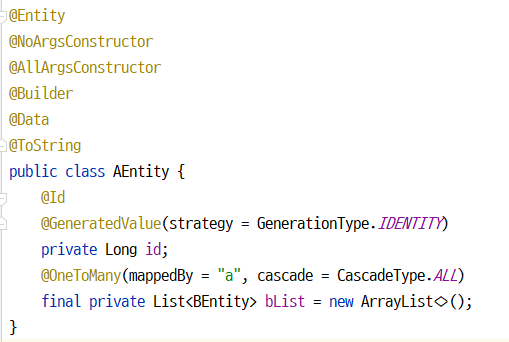 AEntity는 Root(Parent) Entity이고 b를 Child로 @OneToMany 관계이다.
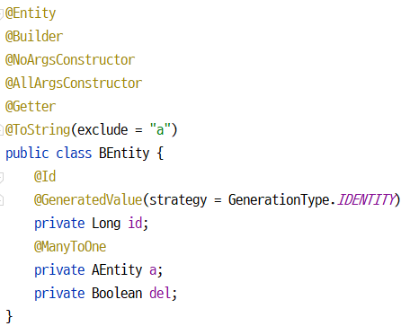 BEntity는 AEntity의 Leaf(Child) Entity이다.
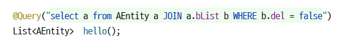
h2 데이터베이스에 만들어진 테이블 구조는 아래 이미지와 같다. 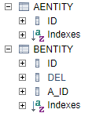
실제로 위와 같이 jpql로 조인을 걸고 테스트를 해보니
참고로 insert한 값을 보면 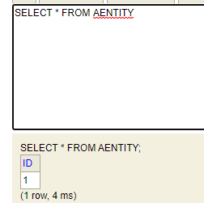
아래의 이미지와 같다.(bentity의 ID 2의 del이 TRUE임을 확인해주세요.) 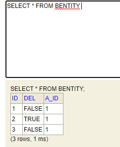
select
aentity0_.id as id1_0_
from
aentity aentity0_
inner join
bentity blist1_
on aentity0_.id=blist1_.a_id
where
blist1_.del=0
위와 같은 쿼리가 만들어 지고 의도한대로 쿼리가 만들어지는 것 같았다…
select
blist0_.a_id as a_id3_1_0_,
blist0_.id as id1_1_0_,
blist0_.id as id1_1_1_,
blist0_.a_id as a_id3_1_1_,
blist0_.del as del2_1_1_
from
bentity blist0_
where
blist0_.a_id=?
하지만 이후 위의 쿼리가 실행되는 것을 확인 할 수 있었다.
실제 디버깅 모드로 값을 확인해보니
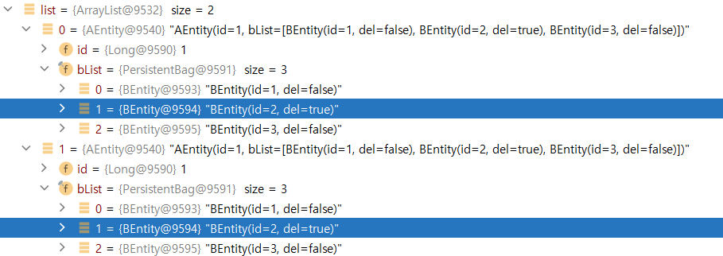
의도와 다르게 실제로 true인 것이 조회된 것을 확인할 수 있다.
동작하는 순서를 보니
select
aentity0_.id as id1_0_
from
aentity aentity0_
inner join
bentity blist1_
on aentity0_.id=blist1_.a_id
where
blist1_.del=0
위의 쿼리가 실행될때는 검색 조건으로 BEntity의 del 컬럼을 where절을 통해 조건이 실행되지만.
AEntity만 가져오고
실제로 BEntity를 가져와야하는 시점에는(참고로 LAZY의 문제이지, EAGER는 아닐줄 알았는데 테스트해보니 둘다 똑같이 동작.)
select
blist0_.a_id as a_id3_1_0_,
blist0_.id as id1_1_0_,
blist0_.id as id1_1_1_,
blist0_.a_id as a_id3_1_1_,
blist0_.del as del2_1_1_
from
bentity blist0_
where
blist0_.a_id=?
위의 쿼리처럼 AEntity의 id값을 참조하는 모든 BEntity를 조회하기 때문에 child인 b를 가져오려고할 때는 의도한대로 del = false인 것만 가져오는게 아닌 del = true인것도 포함한 전체를 가져오는 것이였다.
이것을 해결하기 위해 lazy가 아니라 join 쿼리 한번에 가져오면 되겠다는 판단을 하게됨.
(핑계를 대자면 요새는 거의 mongo를 써서(얘는 document 단위라 lazy를 할 수가 없음) jpa도 가물가물하고 jpa에서 쿼리를 만들때는 jpql이 아닌 querydsl을 사용했기 때문에 오랜만에 jpql을 쓸려니 가물가물하지만 어찌됐든 querydsl로 실행이 되면 나중에 jpql이 만들어진다는 얘기도 들었던것 같고 암튼 컨셉은 비슷하니 querydsl 한방 쿼리로 가져올때처럼 jpql을 작성해보자라는 생각을 하게됨.)
하지만 당시에는 시간이 없어서 일단 간단한 해결책으로 entity에서 bentity를 가져온후 filter 로직을 넣어서 빼주세요라고 했는데
list.stream().filter(x -> x.del == false) «=== 대충 이런식…
아무리 생각해도 이건 나이스하지 않아서 찾아보게 되었고 글을 작성하게 되었다.
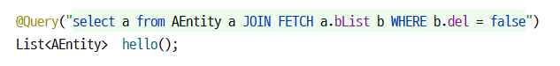
해결방법은 기존의 jpql에서 FETCH란 키워드를 걸어주면 된다.(querydsl도 똑같음)
select
aentity0_.id as id1_0_0_,
blist1_.id as id1_1_1_,
blist1_.a_id as a_id3_1_1_,
blist1_.del as del2_1_1_,
blist1_.a_id as a_id3_1_0__,
blist1_.id as id1_1_0__
from
aentity aentity0_
inner join
bentity blist1_
on aentity0_.id=blist1_.a_id
where
blist1_.del=0
그럼 위와 같은 쿼리가 날라가고
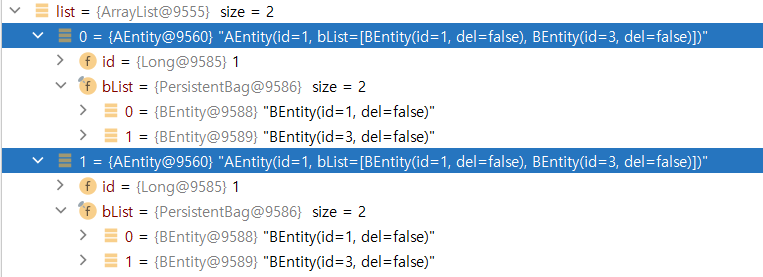
위와 같이 bentity가 del = true 포함 3개가 아닌 원하는 del = false만 가져오는 것을 확인할 수 있다.
그런데 문제는 AEntity의 row의 갯수는 1개인데 조회된 객체의 갯수는 왜 두개일까?
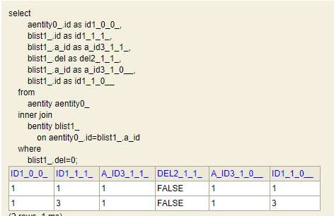
정답은 실제로 쿼리를 날려보면 inner join후 bentity가 row가 2개 이므로 동일한 AEntity정보를 가진 row가 2개 생겨난것이다.
hibernate 입장에서는 ResultSet에서 for문 돌리면서 AEntity를 생성할때 row 하나마다 AEntity를 만들어 내니 id 값을 1로 같지만 얘 입장에서는 별 생각없이 동일한 id를 갖는 AEntity를 여러번 생성시키고 list에 add했을거다..
아무튼 이것을 해결하기 위해서는.
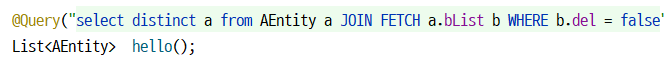 위의 이미지처럼 distinct를 넣어주면 된다.
참고로 distinct 키워드는 sql에도 포함되는데
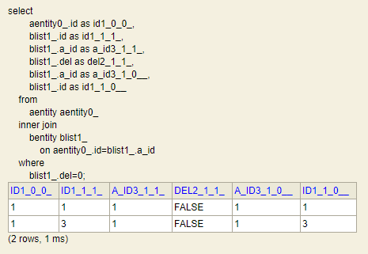
위의 이미지처럼 row는 2개가 조회된다. select 결과만 보면 위의 distict가 없는 것과 같지만.
jpql을 해석하면서 hibernate가 @Id가 같은 Entity의 경우는 객체를 만들면서 자동으로 distinct를 해주는 것을 추측해 볼 수 있다.
참고로 Set을 쓰라는 얘기도 볼 수 있었는데. 이건 아마 hibernate가 resultset을 collection으로 변환할때 @EqualsAndHashCode(of=“id”)의 영향으로 id값이 중복인 데이터는 자료구조의 특성상 제외되는 것이라는 판단이 되는데. 개인적인 취향으로는 distinct를 사용하는게 더 좋아 보인다.
https://docs.jboss.org/hibernate/orm/4.3/devguide/en-US/html/ch11.html
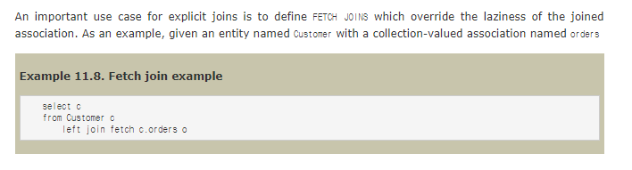
An important use case for explicit joins is to define FETCH JOINS which override the laziness of the joined association.
fetch 키워드는 join 관계에서 lazy를 하지 않는다는 내용을 확인할 수 있다.
jpql 관련 오라클에서 작성한 글이 있길래 링크를 건다. 링크에 ejb3란 글이 있는 것을 보고 jqpl이 java ee구나라는 것을 다시한번 느낀다. 하긴 jpa니… (자꾸 hibernate 종속이라고 착각을…)
https://docs.oracle.com/html/E13946_04/ejb3_langref.html#ejb3_langref_fetch_joins
https://jojoldu.tistory.com/165 여기에서 @EntityGraph 라는 것도 있다는 것을 알게 되었지만
개인적으로 쓸 일이 없을 것 같아. 이런게 있다는 것을 링크만 남기기 위해 첨부한다.